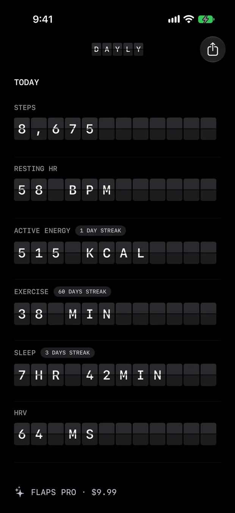

Health & Fitness
Flaps
Your day, in flaps.
iPhone · iPad · Watch

The app
Your day, in flaps.
Apple Health rendered as a split-flap departure board. Steps, sleep, resting heart rate and exercise clatter into place the way an airport board announces the next departure.
A custom flip engine drives the entire identity, with twenty themes each carrying its own accent. The app is strictly read-only and entirely on device: it takes a snapshot of Health and shows it back to you.
Features
What it actually does.
A custom split-flap engine
Twenty themes
Read-only and fully on device
Shareable cards
Privacy
Read-only and entirely on your device. No accounts, no cloud, no analytics.
StorageOn device
An app-group JSON snapshot on your device
Apple HealthRead only
HealthKit, read-only, on-device
AnalyticsNone
No analytics of any kind.
Third partiesNone
No third-party SDKs, trackers or advertising.